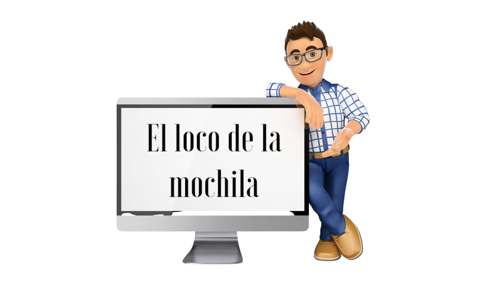

Créditos.
| TÍTULO DE ESTE REA | "Lo que las cosas dicen de mí". |
| AUTOR |
Juan Manuel López Esparrell |
| CONTACTO | https://blogsaverroes.juntadeandalucia.es/ellocodelamochila/ |
| LICENCIA | Licencia Creative Commons Reconocimiento Compartir igual 4.0 |
| FECHA DE ELABORACIÓN | Septiembre de 2024 |